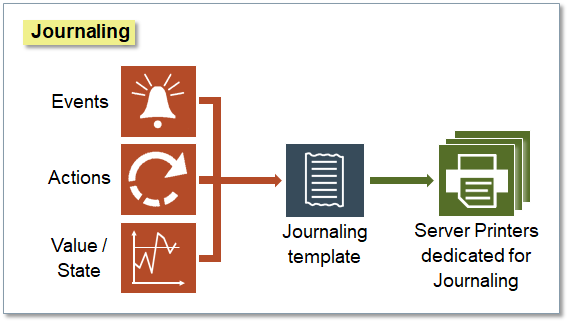
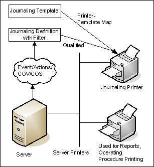
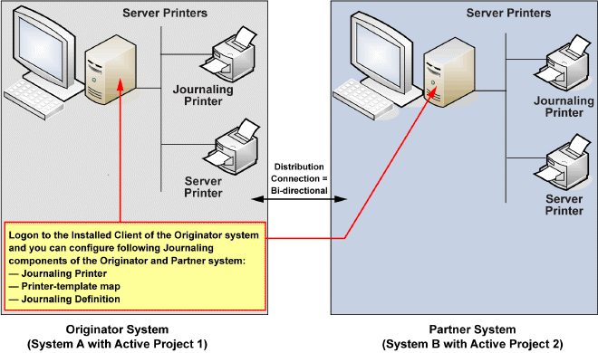

Overview of Journaling

Desigo CC can be configured to print out an ongoing record of the system’s operation using Journaling.
Journaling uses a dedicated Server printer called as journaling printer. Software printers are not supported by journaling printing. The journaling printer must be mapped to a journaling template that defines formatting parameters. Finally the journaling printer must be linked to a journaling definition that determines its contents.
Journaling definitions are accessed in Management View of System Browser, under Project > System Settings > Journaling. They may be further organized into subfolders under the main Journaling folder.
Journaling printouts can be configured to include specified types of alarms, changes in value/state occurring in the field, operator activities such as commands sent or system errors using journaling filters .

Examples
- Printing the event details when the event is generated by crossing the high limit value of the Present Value property of an Analog Output object
- Tracking when a user logs into and out of the system
- Tracking the values of a specific system objects such as Kilowatt (KW) meters for energy auditing purposes
- A secure non-digital copy of system history to be used in the event of a database corruption
Journaling Example for UL
- Using event printout as a secondary display
Journaling in Distributed Systems
In a distributed environment where two Desigo CC systems are connected, a journaling configuration must be entirely local to one of the two systems. This means that all its parameters, such as the journaling printer, template, definition, and filters (Events, Actions, Values and States), must be referred to the same Desigo CC Server.
More specifically:
- The server printer configured as a journaling printer and the templates used for printing must be local to the system for which you are configuring the journaling printer-template mapping.
- The Scope definition used in the journaling definition must be local to the system for which you are configuring the journaling definition.
- The Filters (Events, Actions, Values and States) configured in the journaling definition must be local to the system for which you configure the journaling definition. Additionally, the properties that display in the Values and States filter depend on the EMs configured in the active project of the selected system.
That said, if there is a bi-directional distribution connection between two systems (System A and System B) you can do the following:
- From System A, view and configure the journaling local to System B.
- From System B, view and configure the journaling local to System A.
